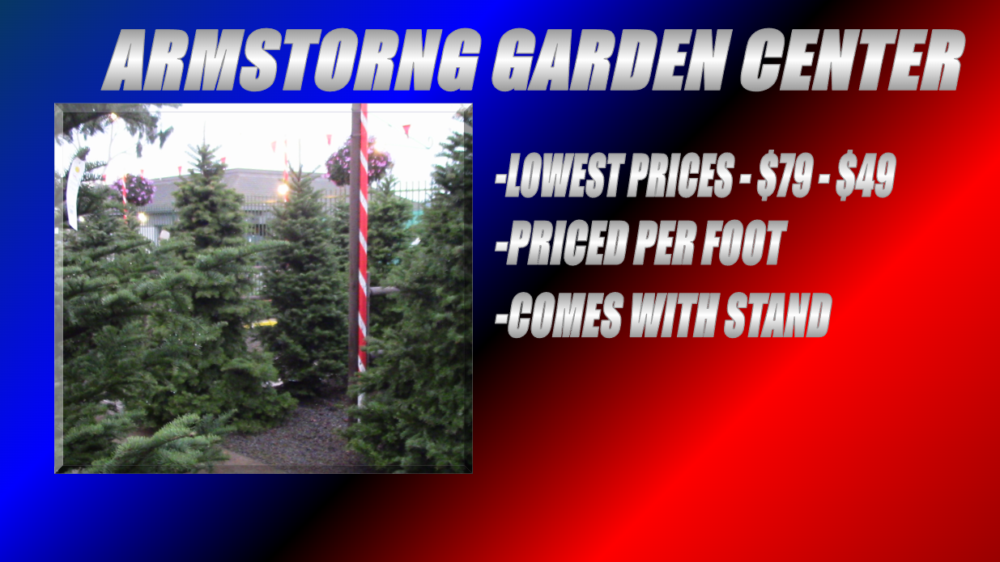

Christmas is only 10 days away and one of the most important and common decorations are Christmas trees. If you still haven't got one, here are some local nurseries to get yours. To start we have Armstrong Garden Center in Del Mar. Their lowest prices are $79 - $49. Each tree is priced per foot and all trees come with stands. While some of their prices may seem high, remember you are paying for a tree that will last for a while and is very high quality. Next we have Pinery Christmas Trees Located near the Del Mar horse racing tracks. Their lowest prices are the douglas fir which is 6-7 ft tall and costs $68. Their best deal is the norman also for $68. They also sell wreaths and other decorations. These are only a few of the many Christmas tree farms in San Diego. Now If you don't want the hassle of caring for a real tree, you can always buy fake christmas trees at stores like Home Depot.
